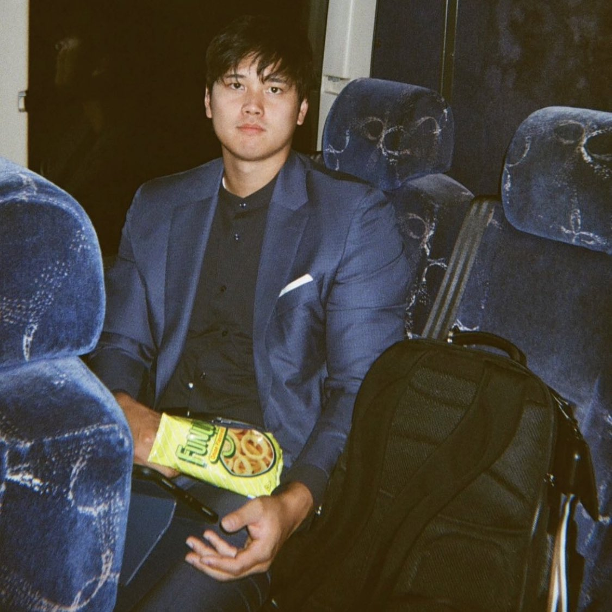

Shohei Ohtani (大谷 翔平, Ōtani Shōhei, born July 5, 1994), nicknamed "Shotime" and “The Unicorn”, is a Japanese professional baseball pitcher, designated hitter and outfielder for the Los Angeles Angels of Major League Baseball (MLB). He previously played for the Hokkaido Nippon-Ham Fighters of Nippon Professional Baseball's (NPB) Pacific League.
Ohtani was born to Kayoko and Toru Ohtani in Mizusawa (now part of Ōshū), Iwate, Japan, on July 5, 1994. His mother, Kayoko, was a national-level badminton player in high school and his father worked at a local automobile manufacturing plant and was an amateur baseball player who played in the Japanese Industrial League. He is the youngest of three children. He has one older sister, Yuka, and one older brother, Ryuta, who is also an amateur baseball player in the Japanese Industrial League. In Japan, Ohtani was known as a "yakyū shōnen" (野球少年)—a kid who lives, eats and breathes baseball. Coached by his father, he displayed an aptitude for the game at an early age. He began playing baseball in his second year of elementary school, and as a seventh-grader, Ohtani recorded all but one of 18 outs in a six-inning regional championship game.
As a teenager, Ohtani could have played baseball for any powerhouse high school team in big cities such as Osaka or Yokohama. Instead, he opted to stay local, selecting Hanamaki Higashi High School in Iwate Prefecture, Northern Japan, the same high school as pitcher Yusei Kikuchi, whom he admired; Ohtani competed there as a swimmer and played baseball. Ohtani's high school baseball coach, Hiroshi Sasaki, said that he was a fast swimmer who "could have made the Olympics."
Under Sasaki's guidance, Hanamaki Higashi's players lived on campus, returning home for only six days a year. Sasaki would assign toilet cleaning chores to Ohtani, to teach the youth pitcher humility. Ohtani threw a 160 km/h (99 mph) fastball as an 18-year-old high school pitcher. He threw the pitch in the Japanese national high school baseball championship tournament, commonly called Summer Koshien. In the 2012 18U Baseball World Championship, Ohtani had an 0 to 1 win to loss record with 16 strikeouts, eight walks, five hits, five runs, and a 4.35 earned run average (ERA) in 10.33 innings pitched.